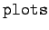
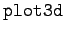

Inhalt Index DeskTop Bronstein

 Computeralgebrasysteme Graphik in Computeralgebrasystemen Graphik mit Maple Dreidimensionale Graphik
Computeralgebrasysteme Graphik in Computeralgebrasystemen Graphik mit Maple Dreidimensionale Graphik


Das schon erwähnte Bibliothekspaket  liefert weitere Möglichkeiten für die Darstellung räumlicher Strukturen. Besonders soll hier die Darstellung von Raumkurven mit dem Befehl erwähnt werden. Dieser erwartet als erstes Argument eine Liste mit drei Funktionen eines Parameters, das zweite Argument muß den Laufbereich dieses Parameters festlegen. Darüber hinaus sind die Optionen des Befehls  zugelassen, sofern sie für diesen Fall sinnvoll sind. Für weitere Informationen zu diesem Paket muß auf die Literatur verwiesen werden.
| Beispiel |
|
Es sollen die beiden mit |
| (20.99a) |
und
| (20.99b) |
erzeugten Graphiken einer perspektivisch dargestellten Kugel und einer perspektivisch dargestellten räumlichen Spirale gezeigt werden: